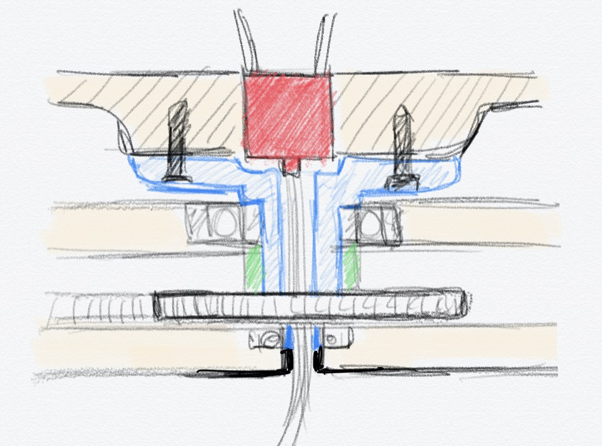
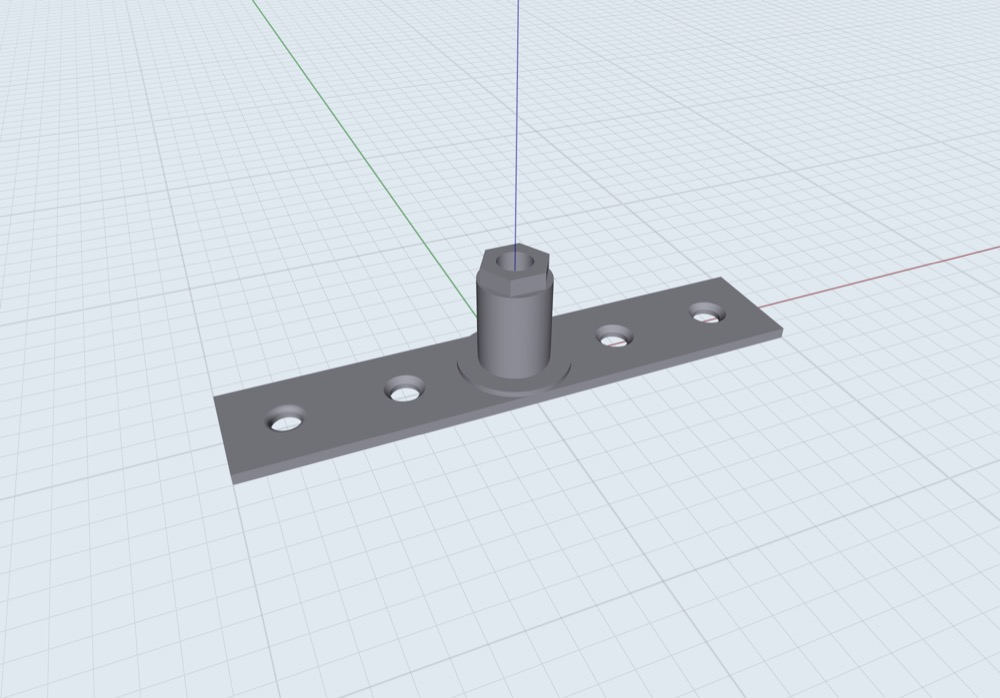

<!DOCTYPE html>
<html lang="en"></html>
<head>
  <meta charset="utf-8">
  <meta content="IE=edge" http-equiv="X-UA-Compatible">
  <meta content="width=device-width, initial-scale=1" name="viewport">
  <title> Rafael Rebolleda — Fab Academy 2020 Documentation</title>
  <!-- Google Fonts-->
  <link rel="stylesheet" href="https://fonts.googleapis.com/css?family=Catamaran&amp;display=swap">
  <link rel="stylesheet" href="../css/main.css">
</head>
<body> 
  <nav>
    <header>
      <ul>
        <li>Rafael Rebolleda</li>
        <li>ESNE (+ LEON)</li>
        <li>Madrid, Spain</li>
      </ul>
      <p class="bio">CX consultant and professor. Single, semi-remote Fab Acadeny student.</p>
    </header>
    <ol>
      <li><a class="red" href="../">About me</a></li>
      <li><a class="blue" href="../FP/">Final Project</a></li>
      <li><a class="blue" href="../DEV/">Project Development</a></li>
    </ol>
    <h1>Assignments</h1>
    <ol> 
      <li><a href="../W1/">Principles & Practices</a></li>
      <li><a href="../W2/">Computer Aided Design</a></li>
      <li><a href="../W3/">Computer Controlled Cutting</a></li>
      <li><a href="../W4/">Electronics Production</a></li>
      <li><a href="../W5/">3D Scan + Printing</a></li>
      <li><a href="../W6/">Electronics Design</a></li>
      <li><a href="../W7/">Computer Controlled Machining</a></li>
      <li><a href="../W8/">Embedded Programming</a></li>
      <li><a href="../W9/">Input Devices      </a></li>
      <li><a href="../W10/">Applications & Implications</a></li>
      <li><a href="../W11/">Output Devices</a></li>
      <li><a href="../W13/">Intellectual Property</a></li>
    </ol>
  </nav>
  <main>
    <h1>W5: 3D Scanning + Printing</h1>
    <h2>3D Scannning</h2>
    <p>3D scanning seems like a pretty straightforward task, but like so many other things, it requires a thoughtful apporach. What you think is the whole task is actually just tge beginnnig.</p>
    <p>This is the device we have at the lab, an Artec 3D:</p>
    <p>White surfaces work better than darker ones, so we tried something that we thought might be manageable, like a small remote clicker on an improvised stand.</p>
    <p>We give it a go by scanning around the object. The software on the computer informs what the best scanning distance, but the white table doesn't help, plus it's hard to scan the back.</p>
    <video src="scanvid.mp4" type="video/mp4" autoplay controls muted loop></video>
    <p>The results are not very good, and we're not comfortable with the set-up, so we try something different. In the lab there's a bike helmet laying around, so we give that a try. To scan all sides, we improvise a rotating stand with a stool.</p>
    <p>In this case, we keep the scanner mostly in the same positions, making sure we're keeping the recommended distance and angle by the sofrware.</p>
    <p>The scanning process is fairly fast, so now we have to clean the mess[h]. The sfotware makes it fairly easy with a range of 2D and 3D selection tools.</p>
    <p>From there on, it's a reasonable wizard-style process with just a few parameters to configure.</p>
    <p>Here's the "final" product. Of course, in a real case scenario, we would probably go back to tweak the cleaning and the closing of surfaces.</p>
    <h2>3D Printing: Design Rules</h2>
    <p>I tried three different printers to compare some of the design rules for this assignment:</p>
    <ul>
      <li>A <a href="https://www.snapmaker.com/product">Snap-Maker</a> that I had bought a couple of years ago to mess around and that was actually sitting in a box :(</li>
      <li>A <a href="https://zortrax.com/3d-printers/m200-plus/">Zortrax M200</a></li>
      <li>A <a href="https://www.tiertime.com/up-plus-2/">Tiertime UP Plus 2</a>. "Timeless reliability"... oh, well :D</li>
    </ul>
    <h3>Wall Thickness</h3>
    <p>Here's the Snap Maker</p>
    <p>And here's the Zortrax</p>
    <h3>Clearance</h3>
    <p>In this case, the Snap Maker failed me... or maybe I failed her with not enough glue, heating and rafting. Everything was going smoothly but sadly the piece dettached halfway through.</p>
    <video src="sm_clearance.mp4" type="video/mp4" autoplay controles muted loop></video>
    <p>The Zortrax did complete the job had also had better defaults for support, although the quality overall is a bit rough</p>
    <h3>Angle</h3>
    <h3>Bridging</h3>
    <p>This is the only test we could ever complete on the Tiertime UP. Very, very unreliable machines... the lab has quite a few of them and there was always some issue. most tests just didn't run, the extruder wouldn't work, it would randomly stop half-way through, etc. </p>
    <p>A big learning is that 3D printing amplifies frustration, as everything takes a lot of time and errors amount to a lot of wasted time.</p>
    <h3>Overhang</h3>
    <p>In this example we can see again a different approach to supports between the Snap Maker and the Zortrax</p>
    <h3>Surface finish</h3>
    <p>After the previous experience, I though I would do all the remaining tests in the same print, but that wasn't a good idea:</p>
    <ul>
      <li>It takes WAY more time printing than doing them individually</li>
      <li>If it fails, all of them fail</li>
    </ul>
    <p>The other learning after stopping the process if that you can also do flexible strips in 3D priniting :)</p>
    <p>Anyway, the print went fine. I'm again surprised at the quality and speed of the Snap Maker when compared to the other printers I've tried for this excercise.</p>
    <h3>Infill</h3>
    <p>In this case I paused the printing to take a picture, which I hadn't done previously</p>
    <h3>Dimensions</h3>
    <p>The outside is pretty much spot on:</p>
    <p>On the inside, however, we need account for the difference.</p>
    <h3>Anisotropy</h3>
    <h3>Thoughts on the different printers</h3>
    <p>I have to say I came surprisingly happy with my purchase of the Snap Maker. It has proven to almost always produce better results, faster and more reliably than the other ones that I tried for the assignment. I thought it'd be more of a hobbyist toy, but now I can see I can use it for more things, not to mention the eye-opening CNC carving of PCBs that I can also do with it!</p>
    <h2>3D Printing: Model</h2>
    <p>The idea is to do a a very simple proof od concept with two solids in a disposition that would be very complicated to achieve by substractive means. In this case, a sphere within a cube.</p>
    <p>Fusion likes to take its sweet little time to cloud-export to STL a simple file like this... like MINUTES!</p>
    <p>The first try is optimistic, with no supports. Perhaps unsurprisingly, It doesn't work:</p>
    <video src="nosupport.mp4" type="video/mp4" autoplay controles muted loop></video>
    <p>Next try with light support for the sphere and the cube. I'm doubtful about the removal of all of it...</p>
    <p>It turned out quite alright!</p>
    <h2>Final Project Designs</h2>
    <h3>Fixture</h3>
    <p>In order to link the servo motor and gears to the spinning ring, I needed to create a piece that would both connect and hold them together. Here's the original sketch:</p>
    <p>I worked with <a href="shapr3d.com">Shapr3D</a> on the iPad to create this piece. The first design was a bit too big and simple:</p>
    <video src="fixture_printing.mp4" autoplay controls loop muted></video>
    <p>After a couple iterations, I came up with this design:</p>
    <video src="../W2/fixture.mp4" autoplay controls loop muted></video>
    <p>Here's each section's purpose:</p>
    <p>Here's one of many ABS 3D prints. </p>
    <h3>Files</h3>
    <ul>
      <li><a href="cube_sphere.f3d">Cube + Sphere (Fusion 360)</a></li>
      <li><a href="cube_sphere.stl">Cube + Sphere (STL)</a></li>
      <li><a href="../FP/fixture.stl">Frame/Bearing/Gear Fixture</a></li>
    </ul>
  </main>
  <footer>
    <hr>
    <p><a rel="license" href="http://creativecommons.org/licenses/by-nc/4.0/"></a><br />This work is licensed under a <a rel="license" href="http://creativecommons.org/licenses/by-nc/4.0/">Creative Commons Attribution-NonCommercial 4.0 International License</a>.</p>
  </footer>
</body>